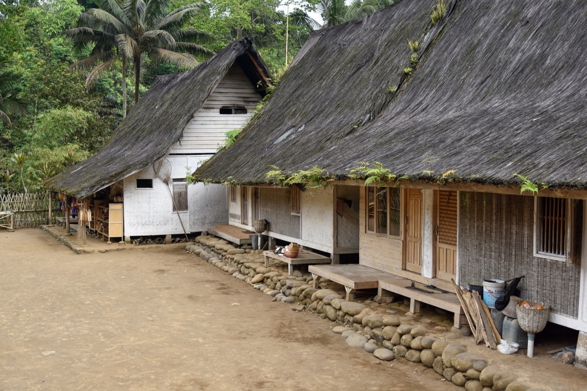

Bamboo & Guadua Construction
Called the "steel of the 21st century" and native to Latin America — bamboo (and Colombia's mighty guadua) is beautiful, sustainable, and strong. The catch is treatment.

Bamboo has an astonishing strength-to-weight ratio — hence "the steel of the 21st century" — and grows back in a few years, making it one of the most sustainable structural materials on earth. In Latin America, the giant species guadua is a proven building bamboo. The single thing that makes or breaks a bamboo home is treatment.
How it's built
Harvested, cured, and treated culms (poles) are joined — traditionally with lashings, today often with steel connectors and mortar-filled joints — to form frames, trusses, and floors, usually on a concrete or stone plinth that keeps the bamboo off the wet ground. Engineered bamboo (laminated boards/beams) is expanding its structural uses further.
What does it cost?
The material is cheap where bamboo grows — vernacular builds can be very low-cost — but well-engineered, treated, architect-designed bamboo homes are a mid-range spend once labor and connectors are counted: roughly $40–120/m² for structure in material terms, more for finished designer builds. (Highly variable; treatment and design drive cost.)
The trade-offs at a glance
| Factor | Rating | Notes |
|---|---|---|
| Cost | 🟢 | Cheap material where it grows; design adds cost |
| Sustainability | 🟢 | Rapidly renewable, carbon-storing |
| Strength | 🟢 | Excellent tensile/strength-to-weight |
| DIY-friendly | 🟡 | Traditional joints learnable; engineering needs a pro |
| Heat/climate fit | 🟢 | Breathable, cool, native to the tropics |
| Moisture/insects | 🔴 | Untreated bamboo rots and gets eaten — treatment is mandatory |
| Seismic/wind | 🟢 | Light + flexible = good seismic behavior |
| Permitting/finance | 🟡 | Growing acceptance; varies by jurisdiction |
Can you build this in Panama or Costa Rica?
This is arguably bamboo's home turf — it grows regionally, suits the climate and culture, and Costa Rica in particular has a real bamboo-building tradition. It's the standout truly-sustainable option. The non-negotiables: use the right species (guadua), keep it off the ground on a concrete plinth, protect it from sun and rain with good overhangs, and — above all — treat it properly against insects and rot. Do that and a bamboo home lasts decades and looks extraordinary.
Thinking about building in Panama or Costa Rica?
SORA is a fixed-price design-build platform for foreign buyers. We build in reinforced concrete by default — and we can talk you through when an alternative method actually makes sense for the tropics. Play with cost live in the 3D configurator.
See real 2026 build costs →Frequently asked questions
Is bamboo strong enough to build a house?
Yes — bamboo has a strength-to-weight ratio rivaling steel in tension, which is why it's used for frames, trusses, and floors. Giant species like guadua are proven structural building materials in Latin America.
How long does a bamboo house last?
Properly treated and detailed (kept off the ground, protected from sun and rain, treated against insects), a bamboo home can last many decades. Untreated bamboo, by contrast, rots and is eaten by insects quickly — treatment is the deciding factor.
Is bamboo a good building material for Panama or Costa Rica?
It's one of the best sustainable options for the region — native, climate-appropriate, and beautiful, with a strong tradition especially in Costa Rica. Success hinges on the right species, a concrete plinth, generous roof overhangs, and thorough treatment.
Sources & verification
Figures in this guide were checked against primary and authoritative sources on 27 July 2026. Immigration, tax, and cost figures change — always confirm the current rules with the official body or a licensed professional before acting.
- loveproperty.com — hempcrete, bamboo & cob eco materials
- SustainDev — bamboo, hempcrete, rammed earth